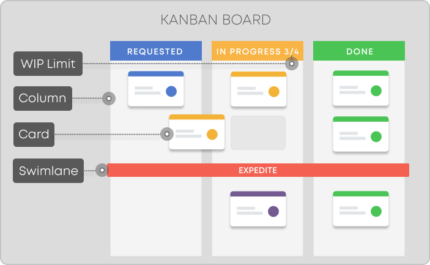

- 1 Introduction
- 2 The Team
- 3 The Board
- 4 The Card
- 5 Push vs Pull
- 6 Swimlanes
- 7 Cumulative flow
- 8 Meetings
- 9 Scumban
- 10 Sources
Introduction
The aim of this article is to introduce the project management process 'Kanban'.
Intention of this article
Well, you can find tons of articles, videos, etc online. If you google the title, you'll find many of the sort "Kanban in x minutes". Most of them are a great start. And I also feel many of them are missing some relevant elements. I have written this article as an attempt to combine all the various information in one place. This also means I can angle it towards your semester project.
What is Kanban
Kanban is a popular Lean workflow management method for defining, managing, and improving services that deliver knowledge work. It helps you visualize work, maximize efficiency, and improve continuously. Work is represented on Kanban boards, allowing you to optimize work delivery across multiple teams and handle even the most complex projects in a single environment.
The Japanese word "kanban", meaning "visual board" or a "sign", has been used in the sense of a process definition since the 1950s.
Much of the information in this article is found here: What Is Kanban? Explained in 10 Minutes | Kanbanize
It is an agile project management process, similar to Scrum. It is focused on getting things done.
Sometimes teams will combine Scrum and Kanban into variations of "Scrumban". This is discussed later.
Overview
The Kanban board is the center in this process. It is a board with columns, each column holding multiple task-card.
A task describes something that must be done. Sometimes this is a user story. Sometimes it is something smaller
These tasks travel from left to right across the board, as they are being worked on. This gives a quick overview of the status.
You may be familiar with websites like Trello or Meistertask. There are many other similar sites, but I usually see these two in semester projects.
A slightly less restrictive, but perhaps more flexible website is Miro. It is basically a free-form online whiteboard, but you can insert a Kanban template. Most images in this article is made with Miro's Kanban board template.
Below is an example board [1]:

The tasks can be just about anything, but you should still focus on completing user stories, like you do in Scrum.
Kanban says nothing about:
- team roles
- estimates
- iterations
- (meetings, rarely mentioned in introductory material)
This makes the process simpler, less strict, but also harder to do well. It may require a bit more discipline. And you may find you need to add some kind of extra structure, or elements from other known processes, .e.g Scrum.
The following slides will first introduce the very basic idea. Then I will add extra ideas and concepts, you can include if you feel like it.
The Team

Kanban says nothing about team roles. All are equal, all are developers.
However, Kanban just describes the essential, and you may add on top of it as needed.
You can assign someone to be product owner, or "Kanban Master", or project manager, if you like.
You can assign people to specialties, e.g. back-end or front-end developer (though in SEP this is not recommended).
This is all free for you to setup as you like.
The Kanban Board
What is the Board
The board is the center of Kanban, everything revolves around it. The board consists of columns, containing tasks of what to do. Depending on the state of the task, it will be located in a specific column. As the state of the task progresses, the task moves to other columns
A Basic Board Setup
The basic board has three columns. The names may differ, but the intention is the same:
- Backlog / todo / requested
- In Progress / doing
- Done
Below is a figure displaying this setup.
All your tasks start in the Backlog column. Once you start working on something, you move that task to the In progress column. When you are done with your task, you move it to the Done column. And then you pick the next task.
I recommend ordering the Backlog by priority, similar to Scrum. The you can (almost) always just pick the top task, when you need to start working on something new.
Limiting Work in Progress
Kanban recommends limiting work in progres (WIP). This is to prevent having too many tasks In progress. You may get stuck on a task, and just think "I'll just start on something else, until I can complete the other". This way you may end up with a lot of started stuff, but not really finishing anything. And Kanban is focussed on getting things done.
The WIP is then a limit of how many tasks can be in the In progress column. Or other columns (besides backlog and done) if you have more columns. Some Kanban apps (Trello, Meistertask, etc) may support adding a WIP limit to columns, otherwise you must manually be vigilant about it.
When the WIP is reached, it's a sign to the team to combine their efforts on moving the tasks forward.
What specific number to pick for WIP? It should probably match your team size, maybe 150% of that. But keep the limit small, this will encourage you to get things done.
The WIP limit lets you identify bottlenecks, i.e. why is your project stuck? If a column is full, the team needs to focus its efforts on the tasks in that column.
Other Board Setups
Often I find the three basic columns are not enough. E.g. for SEP, the user stories moves through various phases or disciplines:
- analysis
- design
- implementation
- test
- documentation
You may even have a "define tests" before the implementation. So, consider at least having these columns. Each user story will then move through these phases.
You might also include a "next up" column, which will act a bit like a sprint. At certain times (read about meetings), you select a couple of user story tasks from the backlog, and move the to the "next up". This gives a clearer overview of what to start on next.
The board could look like this:
The Card/Task
What is this? Kanban says little about what the task is. Often, it's just a short piece of text on a sticky note, placed on a physical board on a wall. Something, which must be done. A work item. Translated from Japanese, it literally means a visual (kan) card (ban) [2].
It is usually a good idea if you can clearly mark which member of a group to whom a specific task is assigned. Some Kanban apps supports this.
You can approach your tasks in various ways.
Generally, tasks move from left to right through the columns. Though you might find a problem when implementing, which causes the task to go back to design.
Or maybe you'll need to create a new task to support your problem.
User stories
Your tasks can be user stories. Then your Backlog column will initially hold all your user stories, preferably ordered by importance. Similar to the Scrum Product Backlog.
This approach, however, may pose a challenge. To complete a user story you may potentially have to do a lot of things, sub-tasks. And it can be difficult to keep track of these sub-tasks, if all you see on the board is the user story.
Some Kanban apps allows you to add more details to a task, e.g. a longer description, links, resources, and a todo-list.
The below is a screenshot from Trello.
This approach, by having user stories as the tasks, and adding sub-tasks, could be okay. I do find it lacking in at least one aspect: Each of these subtasks may need to go through analysis, design, implementation, test.
We don't have the option to mark the sub-tasks with any kind of tag in Trello. Maybe other apps allow this.
But if each sub-task must go through the phases, which column does the user story task belong to? Analysis? Implementation?
Meistertask can generate a new "sub-kanban board" from such checklists. If you create a task, and click on it. You can add items to your checklist. And then convert to project. See below
This will create a new kanban board from the checklist. But there does not seem to be a link back to the original task with sub-tasks. So, I'm not convinced this is amazing.
Note, you might need other types of tasks than just user stories. Maybe you need to do some refactoring, or rework the UI or something. Those could be independent tasks, as they may not belong to a specific user story.
Sub-tasks
Alternatively, the sub-tasks mentioned above will be our real tasks. You could introduce a new column, just right of the Backlog, called sub-tasks. Whenever a user story is moved from
the backlog, it is instead replaced with sub-tasks put into the sub-task column. All these subtask can then move across the board to finish the entire user story.
But, if you are working on more user stories, it may not be clear which sub-tasks belong to which user story.
Some Kanban apps allow tags, labels, or colors. So you might be able to group sub-tasks of a user story together.
Separate boards
You could create a Kanban board per user story. Though this may decrease your overview, and make it difficult to adhere to the WIP limit. This is essentially what Meistertask could do, as I described above.
Your own style
You can of course experiment and see what works best for you. You could have your Backlog column, and a Sprint column, to imitate Scrum. You move X tasks from Backlog to Sprint, and cannot take in anything else from Backlog until everything from Sprint is finished. This does not really align with the spirit of Kanban, though.
Push vs Pull
The boards shown so far have been push systems.
Whenever a task is done in one column, it is moved to the next column. But sometimes this may cause inconveniences. What if the next column has met the WIP limit?
Your task is then stuck in a sort of limbo. And it may not be entirely obvious that it is actually ready to be moved.
If one person does the task from analysis through implementation, but another tests it, it may not be clear if the task is ready to be tested. If the Test column is full, the task is stuck in the previous column. Simple communication might enlighten this, but you may not always be able to get a hold of your team member. So, is the task ready to be tested, or...?
The pull system doubles (almost) the columns. After each column is a "parking area", where you can put tasks, which are ready to be pulled into the next column. For example:
This way, if a person is not taking a task through all columns, but at some point need to hand over to some other team member, it is now clear which tasks are ready to be worked on.
Swimlanes
For various reasons you might want to divide your Kanban board horizontally. This give you swimlanes, like so:

Notice on the left side, we now have Team A and Team B. This is a way to divide the tasks between two teams. Maybe you do pair programming. Or maybe you want a swimlane per user story, so each swimlane contains the sub-tasks for a specific user story.
The screenshot is from Miro. I haven't seen this feature in other Kanban apps. You could just have two boards. But this does create a combined overview.
The Cumulative Flow Diagram
In Scrum you have the Burndown Chart, which will give a quick overview of the progress of the project. For every item finished (usually user stories), you burn points, and the chart line will descent.
Kanban has something similar, but with a bit more information. It is called the cumulative flow diagram [4] [5].
On the X-axis you have the time, e.g. usually day. Perhaps week. On the Y-axis you have the tasks, in each column.
At a specific point in time (i.e. day), you can see how many tasks are in each column.
Here is an example with columns "next up", "doing", and "done".
The Done grows steadily over time. The other two grows or shrinks depending on how many tasks are in the respective columns on the board. The source above explains how to create the diagram in Excel. I don't think this is common feature in the Kanban apps, though personally, I find the diagram very informative.
Any flat areas indicates that tasks are not moving. In that respect the diagram tells some of the same information as the Burndown Chart.
Meetings

Kanban does mention various types of meetings, called cadences. There are seven:
- Kanban Meeting
- Replenishment Meeting
- Operations Review
- Delivery Planning Meeting
- Service Delivery Review
- Risk Review
- Strategy Review
Most of them are not particularly interesting for you in a SEP group, they are oriented towards an organization, so the meetings may include many people other than the development team.
I will mention the most relevant meetings. The rest can be read about here or here.
Kanban Meeting
This is essentially your Daily Standup Meeting in Scrum. It's a daily meeting, with a duration of 15 minutes. The purpose is to observe and track the task status and to keep the team on the same page. The difference is that a Kanban meeting is focusing on the flow. The team read from the right of the board to the left, finding the blockage, and ensuring the work moved out of the system
Replenishment Meeting
Sort of like the Sprint Planning meeting of Scrum.
The purpose is to pull the next few items into the queue of tasks, which should be worked on. It may be that you just order/re-order the backlog column. Or you add new tasks to the backlog column, if you don't include all user stories/tasks from the beginning.
Essentially, if you are out of tasks to work on, the team needs to figure out which tasks to pull in.
The meeting is held weekly, or on-demand.
Delivery Planning
Like the Sprint Review of Scrum. The purpose is to review the work completed, and decide which items to deliver.
Triggers
You might define certain events, which can trigger a meeting. E.g.: *
- a column is empty
- a column is full
- x items have been completed
- the "next up"/"sprint" column is empty
- a task entered the analysis/design column (it's often a good idea for the entire group to do the analysis/design together, so they agree on a common understanding)
When a trigger event occurs, you hold an appropriate meeting.
The potential issue is that these triggers can happen at any time, and you may not be able to do a meeting. So, pre-planned meetings have their benefits. But you can mix the two.
Scrumban
This name is just a common name for any kind of combination of Scrum and Kanban.
The most obvious approach is to do Scrum, and within each sprint, you use Kanban.
You do the sprint planning meeting at the beginning of a sprint, and you create your sprint backlog with all tasks you want to get done this sprint.
Those tasks go on the Kanban, and you use the board to manage your sprint.
For the next sprint, you then start a new board.
Other variations
You can of course combine Scrum and Kanban by taking whichever elements you like from each methodology.
Maybe you like sprints, because it gives you a "short project", which may be easier to comprehend, and there's a fixed "deadline". Some people like this. So, you do Kanban and just add sprints.
Maybe you like the roles of Scrum. So, you transfer those to Kanban.
Or maybe you do Kanban, and with regular retrospective meetings.
https://kanbanize.com/kanban-resources/getting-started/what-is-kanban
https://djaa.com/kanban-cadences/
https://getnave.com/blog/how-to-read-the-cumulative-flow-diagram-infographic/
https://getnave.com/blog/kanban-meetings/
https://ardalis.com/excel-cumulative-flow-diagram/
https://www.zentao.pm/blog/seven-cadences-of-kanban-766.html